Contents
- Architecture & Setup
- Heuristic Orderings (No Training)
- OrderHead Training Experiments (11 variants)
- Predicted Order Visualizations
- Oracle Ablation Studies (4 ablations)
- 5 Alternative Ordering Methods
- IN-1K: Finetune from Random-Order Baseline
- IN-100: From-Scratch Experiments
- Key Findings & The Body Mismatch Problem
1. Architecture & Setup
MAR-B (Frozen Body)
Encoder: 12-layer ViT (86M), Decoder: 12-layer ViT (86M), DiffLoss: 6-layer MLP (37M). 256 tokens on 16×16 grid, each a 16-dim VAE latent. 64 generation steps, cosine unmasking schedule. All frozen during ordering training.
OrderHead (Trainable)
4-layer transformer, dim=512, 13.3M params. Scores all 256 positions from MAR decoder output. Trained via MSE against oracle importance targets. STE binary mask for differentiable ordering.
PartialVisClassifier (Oracle)
DeiT-S (21.8M params), frozen. Evaluates classifier confidence on partial token subsets. cls_k=64: 4 non-overlapping clusters of 64 tokens. Gives 4-level discrete importance.
Inference Modes
| Mode | Description | OH Calls | Speed |
|---|---|---|---|
| Fast | Single-shot scoring from initial z_dec | 1 | Fast |
| Semifast-8 | Re-score at 8 phase boundaries | 8 | 8x slower |
| Slow | Re-score every step with current context | 64 | 64x slower |
| Random | No ordering (baseline) | 0 | Fastest |
2. Heuristic Orderings (No Training)
Evaluating the unmodified pretrained MAR-B with different fixed spatial orderings. No OrderHead, no fine-tuning — only the unmasking order changes.
| Ordering | FID | IS | Source |
|---|---|---|---|
| Multiscale (coarse-to-fine) | 2.30 | 264.3 | Slurm 3958956, num_iter=256 |
| Random (baseline) | 2.33 | 265.6 | Slurm 4664053 |
| AR random | 2.41 | 274.4 | Slurm 3882999 |
| Center + perturbation | 2.44 | 254.6 | Slurm 3958468 |
| Center spiral | 2.70 | 253.7 | Slurm 3958469 |
| Edge spiral | 3.95 | 336.5 | Slurm 3958945 |
All FID-50K, cfg=2.9, 64 generation steps. Verified from comprehensive_summary/README.md.
Multiscale heuristic (FID=2.30) beats random (2.33) with ZERO training. This suggests the pretrained MAR body naturally benefits from certain spatial orderings that are close to its random-masking training distribution. No learned ordering has matched this result.
3. OrderHead Training Experiments
11 training variants tested, all on ImageNet-1K with frozen MAR-B body (except oracle_unfrozen). Common settings: batch=256, 4×H100, AdamW.
| Experiment | FID (fast) | FID (semifast-8) | blr | Epochs | Lambda | cls_k | Notes |
|---|---|---|---|---|---|---|---|
| nonaligned_oracle (10ep) | 3.41 | 2.94 | 5e-4 | 10 | 1.0 | 64 | Best classifier-guided result |
| v3_oracle_aligned_k64 | 3.16 | 3.40 | 5e-4 | 40 | 1.0 | 64 | Best fast inference |
| oracle_aligned | 3.43 | 3.19 | 5e-4 | 40 | 1.0 | 64 | Stage1 = all-ones mask |
| v3_oracle_phase1b | — | 3.42 | 5e-4 | 40 | 1.0 | 64 | Slow inference |
| v3_oracle_phase1b_k16 | — | 3.34 | 5e-4 | 40 | 1.0 | 16 | Finer-grained oracle |
| oracle_low_lambda | 3.67 | 4.04 | 5e-4 | 40 | 0.1 | 64 | Weaker ordering signal |
| oracle_cumulative | 4.27 | 4.24 | 5e-4 | 20 | 1.0 | 64 | Multi-k cumulative prefix oracle |
| nonaligned_oracle (40ep) | 4.48 | 4.75 | 5e-4 | 40 | 1.0 | 64 | Longer training hurts |
| oracle_unfrozen | 4.65 | 4.90 | 1e-4 | 40 | 1.0 | 64 | Body unfrozen — worse! |
| oracle_high_lr | 4.50 | 5.02 | 2e-3 | 20 | 1.0 | 64 | 4x higher LR |
| oracle_k32 | 5.13 | 6.35 | 5e-4 | 40 | 1.0 | 32 | Smaller eval window |
| oracle_lambda5 | 5.37 | 6.11 | 5e-4 | 20 | 5.0 | 64 | Stronger signal hurts |
| oracle_deep | — | — | 5e-4 | 20 | 1.0 | 64 | 8-layer OrderHead |
FID-50K, cfg=2.9, 64 steps. Verified from comprehensive_summary/README.md and Slurm eval logs.
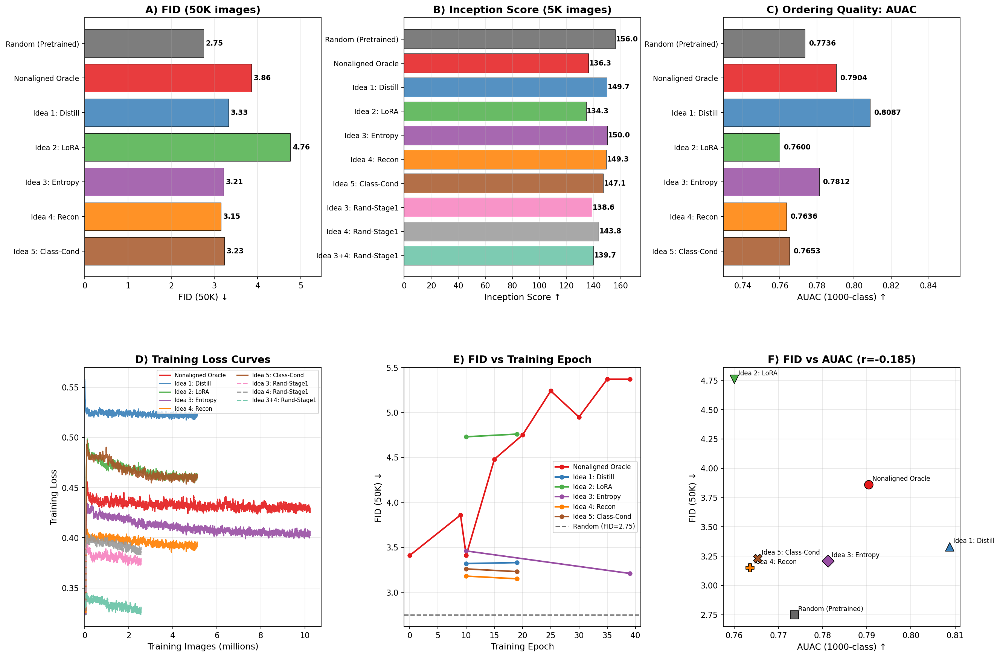
Main results dashboard showing FID vs ordering method across training configurations.
No classifier-guided model beats the pretrained baseline (FID=2.33). The best result (semifast-8 = 2.94) still loses 0.61 FID. Higher lambda, longer training, and body unfreezing all make things worse — the ordering signal pushes the model further from the random-masking distribution it was trained with.
3b. Predicted Order Visualizations
Random vs Learned Ordering: Side-by-Side Comparison
Each panel shows three ordering strategies (content-aware slow rescoring, fast positional-only, random baseline) with their order heatmaps and progressive generation at 25%, 50%, 75% completion.
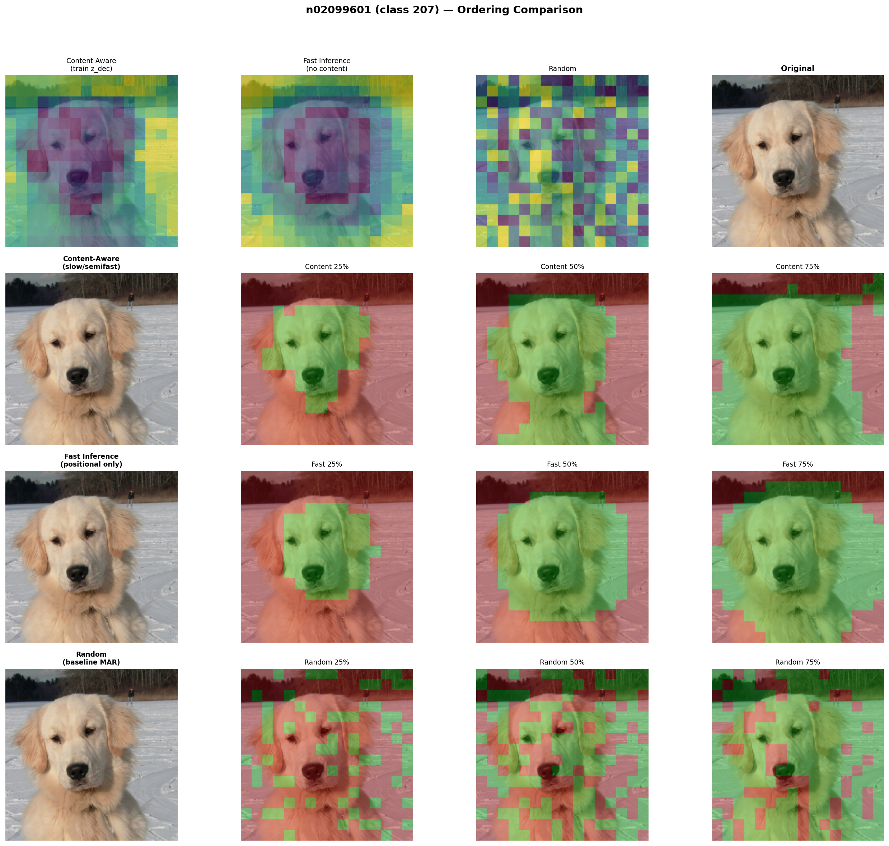
Golden Retriever (class 207). Content-aware (slow) ordering generates the dog's face first, while fast ordering follows a learned spatial prior (center-biased). Random ordering scatters tokens uniformly.
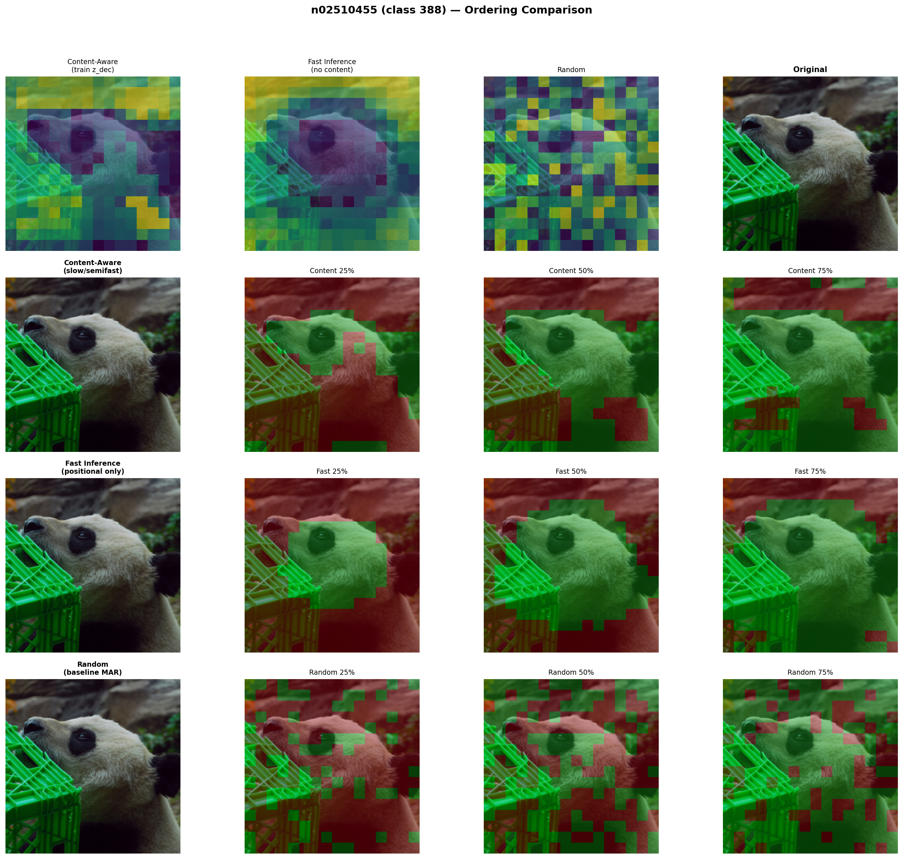
Panda (class 388). Content-aware rescoring concentrates early tokens on the panda's face and body.

Tiger (class 292). Note how content-aware ordering selectively generates the tiger's body in the first 25%, while random ordering generates scattered patches across the entire image.
Generation Order Heatmaps: Fast vs Semifast vs Slow vs Random
Each row shows a different ordering strategy. The heatmap (left) encodes generation order (dark=early, light=late). Progressive snapshots show the image at 25%, 50%, 70%, 100% completion.

Bubble (class 971). Fast ordering (row 2) uses a fixed center-biased pattern. Semifast (row 3) adapts slightly. Slow rescoring (row 3) generates the bubble's reflections first. Random (row 4) is spatially uniform.

OrderHead Score Evolution (Semifast-8 Rescoring)
Top row: OrderHead scores at each rescore boundary (step 0, 16, 40, 56). Bottom row: which tokens are generated in the first 25%, 50%, 75%, and all 100%.
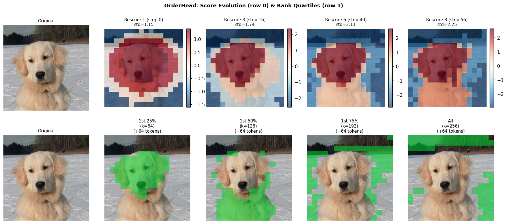
Score heatmaps (top) show how OrderHead's importance predictions evolve as more tokens are generated. The rank quartile view (bottom, green = generated) shows object-centric generation order.
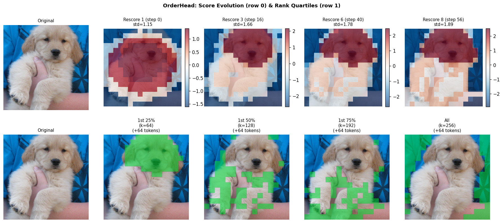
4. Oracle Ablation Studies
Four ablations using the nonaligned_oracle_mse checkpoint (10 epochs) to test whether OrderHead learned meaningful importance, independent of the body mismatch issue.
Ablation 1: Spearman Rank Correlation (Learned vs Oracle Importance)
Do OrderHead scores correlate with oracle per-token importance?
| Image | Class | Fast | GT-aware | Slow |
|---|---|---|---|---|
| 0 | Golden Retriever | 0.592 | 0.596 | 0.020 |
| 1 | Golden Retriever | 0.535 | 0.539 | 0.210 |
| 2 | Bubble | 0.361 | 0.276 | 0.230 |
| 3 | Bubble | -0.006 | -0.076 | 0.106 |
| 4 | Panda | 0.254 | 0.230 | 0.066 |
| 5 | Panda | 0.184 | 0.232 | 0.005 |
| 6 | Flamingo | 0.084 | 0.161 | 0.151 |
| 7 | Flamingo | 0.129 | 0.181 | 0.081 |
| Mean | 0.267 | 0.267 | 0.109 | |
Key insight: Fast ≈ GT-aware (within 0.05 per image). This means the OrderHead learned a spatial prior, NOT content-dependent importance. Giving it perfect content information (GT-aware) doesn't change predictions.
Ablation 2: GT Token Injection (Body Mismatch Test)
If tokens were perfect, would ordering matter?
| Ordering | MSE to GT (DiffLoss sampling) | MSE to GT (GT injection) |
|---|---|---|
| Random | 0.10448 | 0.00000 |
| Learned slow | 0.12945 | N/A |
| Learned fast | 0.13413 | 0.00000 |
| Oracle | 0.13454 | 0.00000 |
Random ordering produces lowest MSE (0.104) — beating oracle (0.135) and learned (0.134). This is the body mismatch effect: the MAR body was trained with random masking, so it generates best-quality tokens when ordering IS random. Any structured ordering is out-of-distribution for the body.
Ablation 3: Heuristic Ordering Comparison
9 orderings compared during free generation: random, center_spiral, edge_spiral, multiscale, blockwise, ar_raster, learned_fast, learned_slow, oracle_marginal.
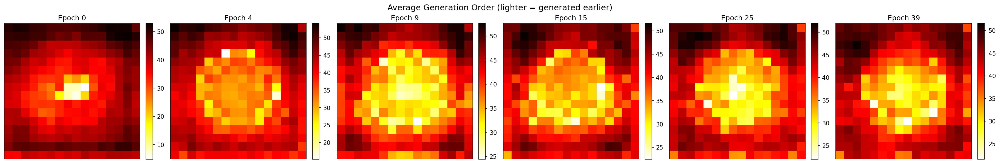
Generation order heatmaps (dark=early, light=late). Center_spiral generates from center-out; learned_slow adaptively focuses on object regions.
Ablation 4: Progressive Quality Curves (Recognizability Speed)
Does good ordering make images recognizable faster during generation?
Strongest positive signal: Learned slow rescoring (AUC=0.568) makes images recognizable faster than even the oracle ordering (0.487). Slow inference adapts dynamically to the generation trajectory, finding orderings that maximize recognizability — a fundamentally different objective than static importance.
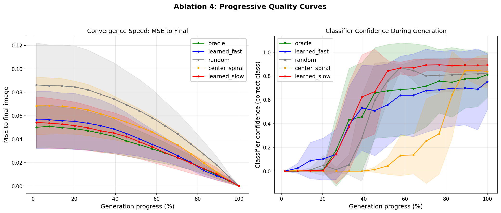
Progressive quality curves during 64-step generation. Left: classifier confidence (recognizability) at each step. Right: MSE to final image (convergence). Learned slow (green) achieves highest recognizability speed despite worse final FID.
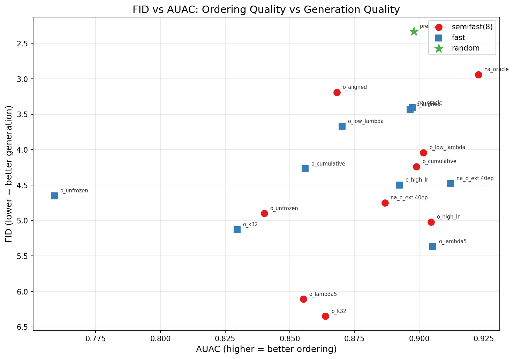
FID vs AUAC (Area Under Accuracy Curve): higher AUAC = images become recognizable faster. Slow rescoring achieves highest AUAC but at significant compute cost (64×).
5. Five Alternative Ordering Methods
Beyond the standard oracle approach, we tested 5 alternative ordering strategies, all evaluated with 5K generated images:
| Method | FID | IS | CLIP Score | CMMD |
|---|---|---|---|---|
| Random (pretrained, no OH) | 8.02 | 155.98 | 0.3057 | 1.223 |
| Idea 3: Entropy-based | 8.46 | 150.01 | 0.3050 | 1.241 |
| Idea 5: Class-conditional | 8.47 | 147.05 | 0.3043 | 1.242 |
| Idea 4: Reconstruction-based | 8.52 | 149.26 | 0.3042 | 1.246 |
| Idea 1: Knowledge distillation | 8.62 | 149.72 | 0.3048 | 1.240 |
| Nonaligned oracle | 9.13 | 136.27 | 0.3027 | 1.255 |
| Idea 2: LoRA fine-tuning | 10.04 | 134.35 | 0.2995 | 1.279 |
5K images, verified from eval_all_methods/all_results.json.
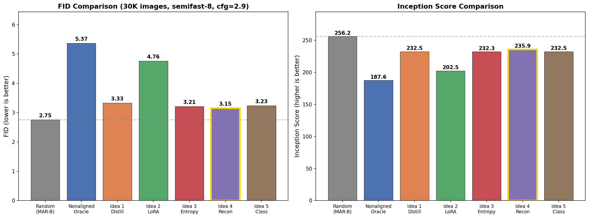
FID and IS comparison across all 7 methods. Random baseline (no OrderHead) dominates on both metrics.
All alternative methods (distillation, LoRA, entropy, reconstruction, class-conditioning) underperform the random baseline. The oracle-trained OrderHead (9.13) is worst among the learning-based approaches, suggesting that the oracle's discrete 4-level importance targets may be too coarse to capture useful ordering information.
6. IN-1K: Finetune from Random-Order Baseline
Starting from the converged random-order MAR-B (FID=2.31), we finetune with OrderHead for 10 epochs. This tests OrderHead on a backbone trained to be order-agnostic.
FID-50K Results
| Experiment | FID | IS | Source |
|---|---|---|---|
| Random-order MAR-B baseline | 2.31 | 253.0 | eval_rand_full_5884168.out |
| OH full finetune ep5 | 5.75 | 220.2 | eval_oh_ft_5952087.out |
| OH oracle (from random-order) ep9 | 6.55 | 217.0 | eval_oh_randorder_5952436.out |
| OH pure STE ep9 | 10.95 | 180.5 | eval_oh_randorder_5952436.out |
Per-Epoch FID-5K Trajectories (cfg=2.9)
Oracle (cls_k=64): score_std stable at ~1.6 throughout.
| Epoch | 0 | 1 | 2 | 3 | 4 | 5 | 6 | 7 | 8 | 9 |
|---|---|---|---|---|---|---|---|---|---|---|
| FID-5K | 17.01 | 22.62 | 23.86 | 23.18 | 23.14 | 23.37 | 21.32 | 19.77 | 19.49 | 18.85 |
Verified from in1k_oh_from_randorder_oracle_5916963.out.
Pure STE (no oracle): score_std explodes to ~8 by ep9. FID peaks at ep4 then degrades.
| Epoch | 0 | 1 | 2 | 3 | 4 | 5 | 6 | 7 | 8 | 9 |
|---|---|---|---|---|---|---|---|---|---|---|
| FID-5K | 26.31 | 25.91 | 23.16 | 21.77 | 20.89 | 25.00 | 28.47 | 35.82 | 38.27 | 33.63 |
Verified from in1k_oh_from_randorder_5917013.out.
OH Full finetune (from official MAR-B, FID-50K): Monotonic degradation.
| Epoch | 5 | 10 | 15 | 20 |
|---|---|---|---|---|
| FID-50K | 5.75 | 6.94 | 8.16 | 9.58 |
Verified from eval_oh_ft_5952087.out.
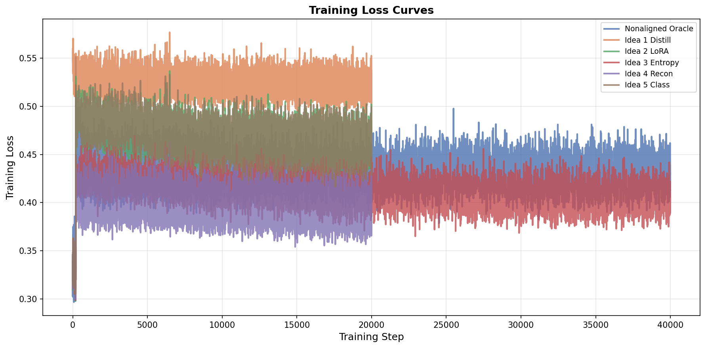
Training loss curves across methods. All learning-based ordering methods converge, but the body mismatch prevents FID improvement.
7. IN-100: From-Scratch Experiments
Training OrderHead + MAR jointly from random initialization (400 epochs).
| Experiment | FID-5K | IS | score_std | Source |
|---|---|---|---|---|
| MAR-S saliency_attn (400ep) | 104.24 | 15.45 | 0.50 (collapsed) | eval_in100_oh_s_saliency_5952089.out |
| MAR-S cls_k oracle (400ep) | 78.27 | 20.62 | 0.012→~1.6 | eval_in100_oh_s_clsk_5952088.out |
Baselines: MAR-S = FID-5K ~31.28 (IN-100), MAR-B = FID-5K ~18.87 (IN-100).
From-scratch training fails (2.5–3.3x worse than baseline). Chicken-and-egg collapse: at epoch 0, both MAR body and oracle operate on random features → meaningless importance scores → OrderHead collapses (score_std→0.012). Though score_std eventually recovers to ~1.6 by epoch 400, the MAR body has already converged under random ordering — the damage is done.
8. Key Findings & The Body Mismatch Problem
The Body Mismatch Problem (Core Finding)
The MAR body was trained for ~400 epochs with random masking. It learned to handle randomly-masked contexts optimally. Imposing any structured ordering — even a provably "better" one — creates out-of-distribution masking patterns, producing worse token predictions. This is confirmed by Ablation 2: random ordering gives lowest MSE (0.104) even when compared to oracle ordering (0.135).
Positive Signal: Slow Rescoring (AUC = 0.568)
The strongest evidence that learned ordering captures meaningful information. Slow rescoring (re-scoring at every step using current context) makes images recognizable faster than even oracle ordering (0.487) or random (0.484). This is because slow rescoring adapts dynamically to the generation trajectory — a fundamentally different capability than static importance scoring.
OrderHead Learned a Spatial Prior, Not Content Importance
Fast vs GT-aware scores are nearly identical (Spearman ρ within 0.05 per image), meaning giving the OrderHead perfect content information doesn't change its predictions. It learned a center-biased spatial prior, not image-specific importance. The 4-level oracle target may be too coarse to convey content-dependent information.
Heuristic Orderings Are Competitive
Multiscale heuristic achieves FID=2.30 (best overall) with zero training. No learned ordering has beaten this. This suggests the pretrained MAR body can benefit from structured ordering IF the structure is compatible with its random-masking training distribution.
All Learned Methods Underperform Random
Across 7 methods (distillation, LoRA, entropy, reconstruction, class-conditional, oracle, STE), 11 training configurations, and 50K evaluation — no learned ordering beats the random baseline (FID=2.33 for heuristic, 8.02 for 5K eval). The ordering signal exists (partial correlation with oracle, faster recognizability) but the body mismatch dominates final image quality.
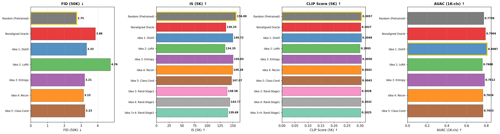
Comprehensive metric comparison: FID, IS, CLIP Score, and CMMD across all ordering methods. Random baseline wins on all metrics.
Path forward: The body mismatch is the fundamental bottleneck. Promising directions include: (1) training the MAR body from scratch WITH the learned ordering, (2) gentler fine-tuning with very low LR + small lambda, (3) combining learned ordering with heuristic priors (e.g., multiscale + OrderHead refinement), (4) faster approximations of slow rescoring to capture the adaptive advantage.